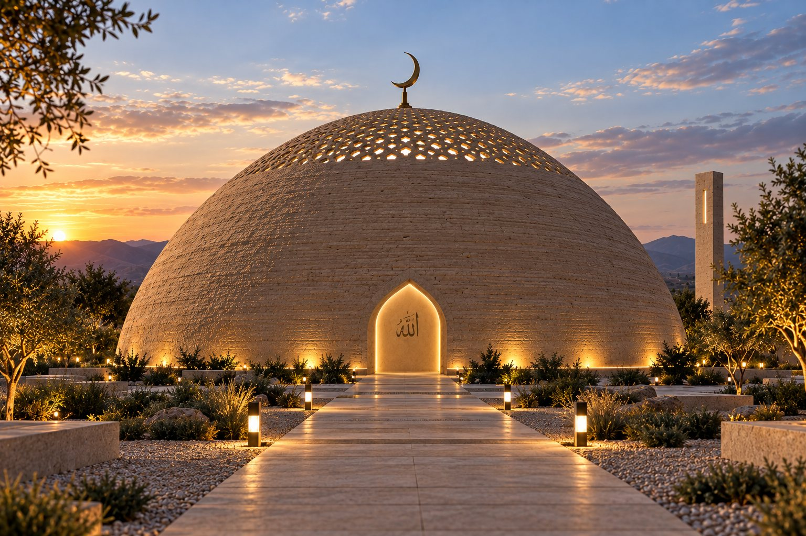
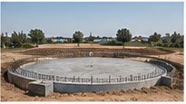
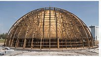
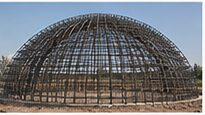
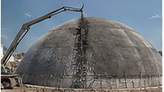
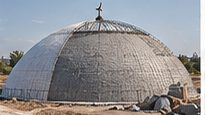
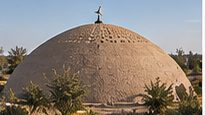

Цельная форма
Круглый молитвенный зал накрыт единой оболочкой. Нет разделения на стены и кровлю — купол начинается от земли и заканчивается полумесяцем.

Концепция молитвенного пространства на 200 человек.
Простота · Гармония · Ближе к земле
Один цельный объём без фасадов, углов и башен. Снаружи — тихая форма, продолжающая рельеф. Внутри — единое пространство под куполом, освещённое сверху.
Круглый молитвенный зал накрыт единой оболочкой. Нет разделения на стены и кровлю — купол начинается от земли и заканчивается полумесяцем.
Наружная поверхность — минеральная штукатурка под натуральную землю. Здание меняет оттенок вместе с солнцем и не спорит с ландшафтом.
Перфорированный фонарь в вершине купола. Дневной свет падает вертикально, рассыпается по своду и собирает пространство вокруг михраба.
«Простота приближает к сущности»
принцип проекта
Все значения предварительные и подлежат уточнению проектом.
Снаружи внутрь. Торкрет-бетон — часть расчётной системы, а не самостоятельная «земляная» стена.
Минеральная штукатурка с фактурой натуральной земли. Долговечная, паропроницаемая, стойкая к морозу.
Сплошной контур по всей поверхности купола с отдельными узлами у фонаря, проёмов и фундамента.
Минеральная вата или ППУ — тип и толщина по теплотехническому расчёту для климата Актобе.
Отделяет утеплитель от несущей оболочки, снимает температурные деформации.
Пространственный арматурный каркас с меридиональной и кольцевой арматурой, усиление опорного кольца, проёмов и зоны фонаря. Толщина — по расчёту.
Тёплая штукатурка, акустические решения, скрытая подсветка ниш и михраба.
В зените купола — перфорированный фонарь. Днём он рассеивает солнце сотнями точек по своду, к вечеру превращается в мягкий ореол над михрабом. Стены остаются глухими: ничего не отвлекает от молитвы.
Фонарь — расчётный элемент оболочки. Его размер, ограждение, зона усиления и водоотвод определяются проектом, а не картинкой.
Десять шагов от участка до ввода. Каждый следующий начинается только после закрытия предыдущего.
Документы, градусловия, топосъёмка, сети
Геология, грунт, грунтовые воды
Архитектура → конструктив → инженерия → пожарный раздел → экспертиза
Котлован, арматура, бетон, гидроизоляция
Пространственный купольный каркас, усиление кольца
Пробный участок, несущий слой, контроль толщины
Гидроизоляция, утепление, минеральная фактура
Вентиляция, отопление, электрика, автоматика
Михраб, акустика, свет, омовение
Благоустройство, исполнительная документация






брать размеры фундамента с рендера. Тип и габариты основания — только после инженерно-геологических изысканий.
назначать диаметр, шаг и класс арматуры, а также толщину оболочки без конструктивного расчёта.
рассматривать торкрет как самостоятельную «земляную» стену. Это часть проектной системы.
использовать снеговые, ветровые и температурные значения с концептуальных изображений как нормативные.
начинать стройку без утверждённого проекта, пожарного раздела и решения о строительстве культового здания по законодательству РК.
Изображения на этой странице — архитектурная концепция. Всё, что здесь показано, должен проверить лицензированный проектировщик: устойчивость оболочки, опорное кольцо, фонарь, проёмы, крепление полумесяца, снег и ветер, долговечность.
Реальное строительство начинается только после инженерно-геологических изысканий и утверждённого проекта по нормам Республики Казахстан.